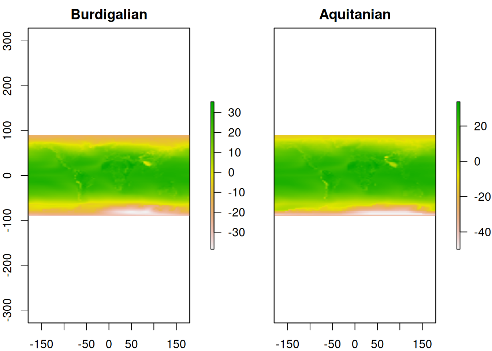
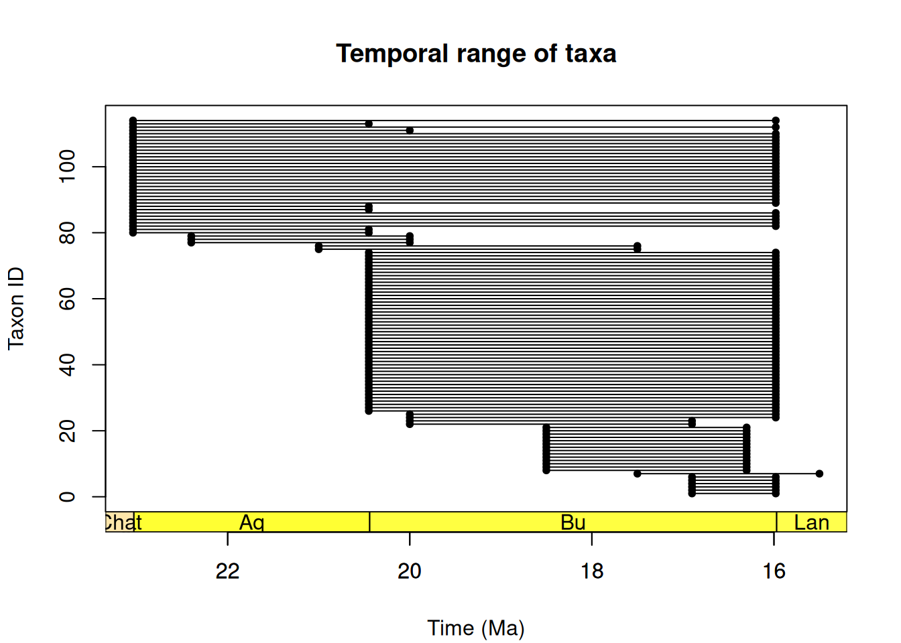
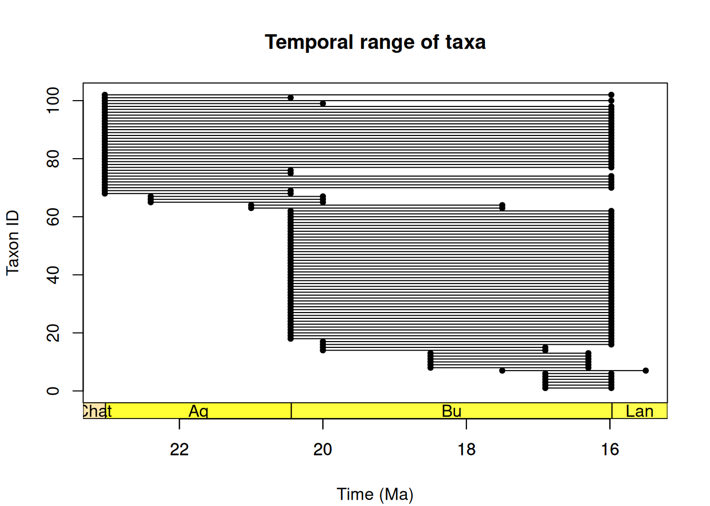
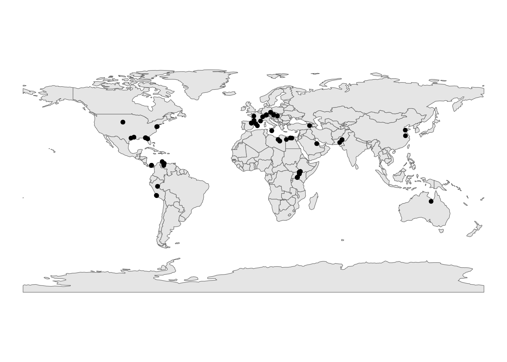
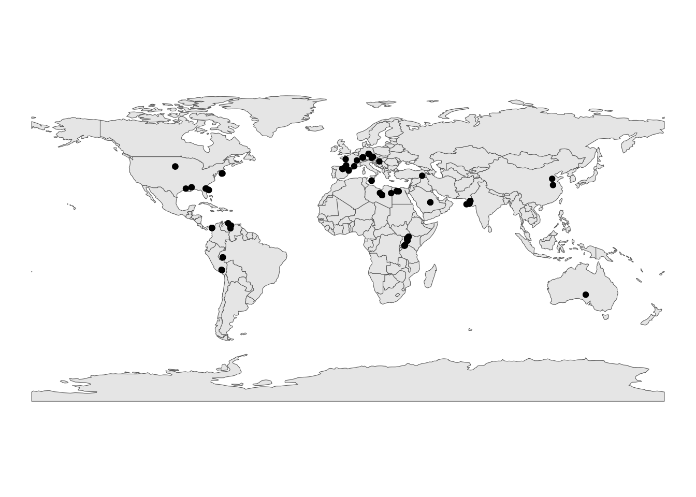
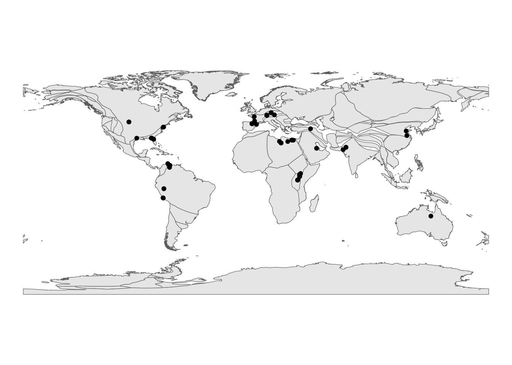
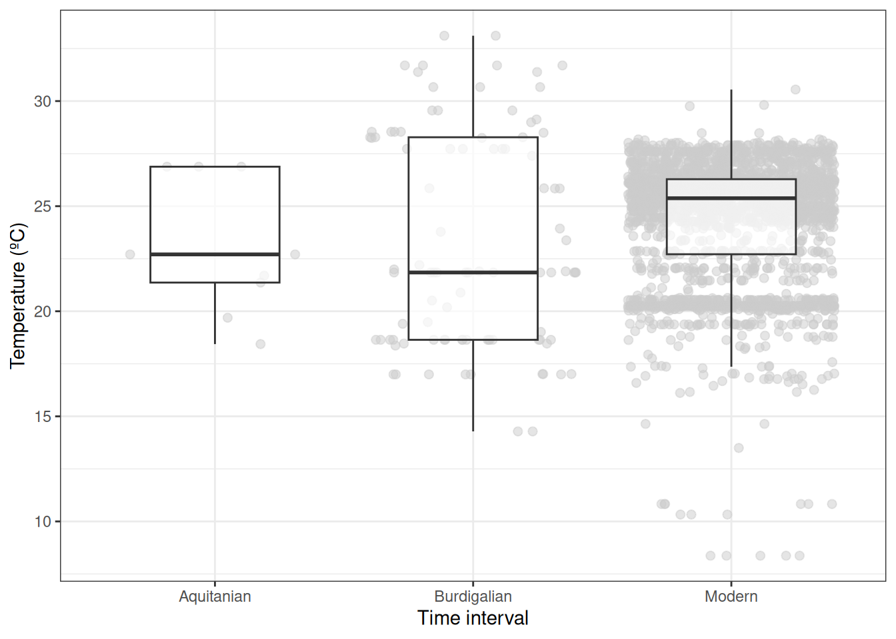

# Install necessary packages
#install.packages("rgbif")
#install.packages("tidyverse")
#install.packages("ggplot2")
#install.packages("palaeoverse")
#install.packages("raster")
#install.packages("sf")
#install.packages("geodata")
#install.packages("rnaturalearth")
#install.packages("ncdf4")Data processing II
Data processing II: Data harmonization and synthesis
Learning Objectives
In this session, we’ll walk through how to combine and use different deep-time and modern datasets to answer questions that cross the palaeo-ecological divide. We’ll cover:
- The power of harmonizing data from different sources
- The considerations and complications that arise when combining datasets
- How to source spatially explicit climatic data for the past and present, and how to look at relationships with fossil and modern occurrences
- How to plan, write code for, and carry out projects covering multiple time frames
To do this, we’ll continue working with the Crocodylia dataset. If you’ve not quite finished cleaning your dataset, you can find a cleaned version that’s ready for this next step HERE.
Plan for the Session
The session will be split into the following sections:
- Introduction to harmonization and synthesis
- Planning, setup, and finding your data
- Building a workflow to merge datasets
- Data visualisation and synthesis
I. Introduction to Harmonization and Synthesis
Presentation goes here??
II. Planning, Setup, and Finding Your Data
Our Research Question
Our first step will be to define our research question, which will be framed around the dataset of Cenozoic Crocodylia that we’ve been working on this morning. As mentioned previously, Crocs are an excellent group to use for studies comparing modern and deep-time records: they have a very tight association with temperature, are well represented in the fossil record spatially and temporally, and many extant species are threatened by anthropogenic impacts including habitat loss and climate change.
In this section, we’ll aim to answer the following research question: How does the temperature range inhabited by Crocodylia in deep-time compare to that seen in the present?
We’ll focus our deep-time analysis on the Miocene, a climatically dynamic epoch in Earth’s history that can serve as an analog for future climate scenarios (e.g., Steinthorsdottir et al. 2020).
Making a Plan
Before we start, it’s helpful to write out a step-by-step plan of what we want to accomplish to ensure that the approach we’re taking and the code that we write will appropriately answer the question(s) that we are interested in. Think of this as a kind of “logical flow.” In other words, what are all the steps needed to get from our research idea to our finalised analysis? This can be as extensive as you wish and can be done in any fashion—even writing out your code or general approach on pen and paper! We’ll be doing this a few times today, so let’s start by considering our research question and what materials we will need to address it.
As we aim to compare the distributions of Crocodylia in deep-time compared to the present, there are a couple of key datasets that we will require:
- A spatially explicit dataset of modern Crocodylia
- A spatially explicit dataset of Crocodylia in the deep-time intervals we will assess
- A spatially explicit dataset of modern climatic variables
- A spatially explicit dataset of climatic variables for the deep-time intervals we choose, likely generated from palaeoclimatic modelling
Heads Up!
Even at this first step, the decisions we make will have consequences for our research and findings. For example, our choice of datasets and how they are handled can impact our results. This will be a recurring theme throughout the session.
BREAKOUT SESSION 1
Organize yourselves into groups of 4-6 and discuss the following questions:
1. What issues might we encounter when sourcing, gathering, and working with these various climatic and occurrence datasets?
2. What caveats should we be aware of, and how can they be addressed?
III. Building a Workflow to Merge Datasets
To help you get an idea for the process of using data from different sources, we’ll now walk through an example for how we might acquire and harmonize our climatic data. First, let’s make a plan of the steps we’ll take and some of the decisions we’ll need to consider along the way.
- Decide which climate data to use. What will be most appropriate for the taxonomic group we are studying? Some potential choices might be:
- The mean annual temperature
- The mean annual range of temperature
- The annual standard deviation of temperature
- The temperature of the hottest or coldest quarter
- Find a suitable source of data. We will need to find spatially climatic data for each time interval we are interested in and acquire it in an appropriate format (.nc). What factors might we consider?
- Availability of specifications listed above
- Spatial resolution
- Temporal resolution
Sort file structure. Ensure that your R project is set up appropriately and that the downloaded files are in an appropriate place to be used in your project, remembering to follow some of the guidance that we’ve covered earlier on today (e.g. ensuring there are raw versions of your data saved).
Load data. Read our data into R in an appropriate format to work with (e.g., raster). How might we do this? What packages might we need?
Check formatting. Ensure that the data are formatted appropriately. How might this impact our results or interpretations? What issues should we be aware of?
- Do the data have the right extent for our research question and R pipeline, and can this be changed?
- Are they at an appropriate spatial/temporal resolution, and can this be changed?
- Are they in the right Coordinate Reference System?
- Are they capturing the same climatic information?
- Prepare for analysis. Ensure that the data are ready to be used in our next stages of analysis.To do this, we might want to break down our steps further:
- Check the format of the data using the ‘class()’ function
- Make a reference raster with appropriate resolution and extent
- Ensure climate raster doesn’t have wrapping/extent issues, and rotate if necessary
- Re-sample raster to our reference raster
- Ensure that all rasters are capturing the same climatic information
Now that we have a basic plan, we can start to put it into action. Let’s write some code!
0. Set-up
First, we’ll need to install and load some packages that will allow us to work with our data:
# Load packages
library(rgbif)
library(tidyverse)── Attaching core tidyverse packages ──────────────────────── tidyverse 2.0.0 ──
✔ dplyr 1.1.4 ✔ readr 2.1.5
✔ forcats 1.0.0 ✔ stringr 1.5.1
✔ ggplot2 3.5.2 ✔ tibble 3.3.0
✔ lubridate 1.9.4 ✔ tidyr 1.3.1
✔ purrr 1.1.0
── Conflicts ────────────────────────────────────────── tidyverse_conflicts() ──
✖ dplyr::filter() masks stats::filter()
✖ dplyr::lag() masks stats::lag()
ℹ Use the conflicted package (<http://conflicted.r-lib.org/>) to force all conflicts to become errorslibrary(ggplot2)
library(palaeoverse)
library(raster)Loading required package: sp
Attaching package: 'raster'
The following object is masked from 'package:dplyr':
selectlibrary(sf)Linking to GEOS 3.12.1, GDAL 3.8.4, PROJ 9.4.0; sf_use_s2() is TRUElibrary(geodata)Loading required package: terra
terra 1.8.54
Attaching package: 'terra'
The following object is masked from 'package:tidyr':
extractlibrary(rnaturalearth)
library(ncdf4)We’ll also set some default values to ensure that our spatial datasets conform with one another.
# Set spatial resolution
res <- 1
# Set spatial extent
e <- extent(-180, 180, -90, 90)
# Make generic raster using these values
ref.raster <- raster(res = res, ext = e)Now lets find some climate data!
1. Organising Palaeo-climatic Data
After exploring several potential palaeo-climatic datasets, we’ve decided to use a dataset of global mean surface temperatures for the Phanerozoic (Scotese 2022), based on HadleyCM3L simulations and aligned with geochemical proxies like ∂18O. The data are available for 5-million-year intervals that cover our time period of interest (Miocene) and have a 1x1 degree (lat/long) resolution. The dataset is also publicly accessible via Zenodo: https://zenodo.org/records/5718392.
Scotese, C. R., Song, H., Mills, B. J. W., & van der Meer, D. G. (2021). Phanerozoic paleotemperatures: The earth’s changing climate during the last 540 million years. Earth-Science Reviews, 215, 103503. https://doi.org/10.1016/j.earscirev.2021.103503
Valdes, P.J., Scotese, C.R., and Lunt, D.J. (2021). Deep Ocean Temperatures through Time, Climates of the Past, Discussions, https://doi.org/10.5194/cp-2020-83.
This climatic dataset offers decently high temporal resolution (for deep time), but one thing we’ll need to keep in mind is that the 5-million-year intervals don’t align perfectly with geological stages. This will come into play later when we start working with the occurrence data.
For our study, we’ll work with two files from this dataset: one covering 25-20 Ma and another covering 20-15 Ma. These data span warming intervals like the Mid Miocene Climatic Optimum and cooling intervals like the Oligocene-Miocene Climate Transition.
First, we need to load in our data, which is currently stored as a .nc file, and have a look at it. This can be read into R as a raster using the ‘raster’ package:
# Load in rasters of palaeoclimate for each time interval
raster2prep.15 <- raster(x = "015_tas_scotese02a_v21321.nc")
raster2prep.20 <- raster(x = "015_tas_scotese02a_v21321.nc")
raster2prep.15class : RasterLayer
dimensions : 180, 361, 64980 (nrow, ncol, ncell)
resolution : 1, 1.005556 (x, y)
extent : -180.5, 180.5, -90.5, 90.5 (xmin, xmax, ymin, ymax)
crs : NA
source : 015_tas_scotese02a_v21321.nc
names : X015_tas_scotese02a_v21321
zvar : 015_tas_scotese02a_v21321 raster2prep.20class : RasterLayer
dimensions : 180, 361, 64980 (nrow, ncol, ncell)
resolution : 1, 1.005556 (x, y)
extent : -180.5, 180.5, -90.5, 90.5 (xmin, xmax, ymin, ymax)
crs : NA
source : 015_tas_scotese02a_v21321.nc
names : X015_tas_scotese02a_v21321
zvar : 015_tas_scotese02a_v21321 As you can see, the resolution and extent of these rasters doesn’t quite match our reference one that we made above. We’ll have to resample our data to match our reference raster:
# Resample data to match our set extent and resolution
raster.resampled.15 <- resample(x = raster2prep.15, y = ref.raster)
raster.resampled.20 <- resample(x = raster2prep.20, y = ref.raster)Finally, we can stack these rasters into one file, name them, and see what they look like:
# Stack rasters
scotese.temp <- stack(raster.resampled.15, raster.resampled.20)
# Name and plot rasters
names(scotese.temp) <- c("Burdigalian","Aquitanian")
plot(scotese.temp)
Now we’ll move on to our modern data!
2. Organising Modern Climatic Data
We’ll obtain our modern climatic data from WorldClim:
https://www.worldclim.org/
To keep our climatic variables consistent, we’ll also work with the mean annual temperature data.
Whilst below we show you code to access this data directly within R, it can take a while to download. We’ve therefore also included it alongside the other materials for the workshop, which can be accessed HERE.
# Load data from WorldClim and make into raster
modern <- worldclim_global(var = "tavg", res = 2.5, path = tempdir())
modern <- as(modern, "Raster")
modernclass : RasterStack
dimensions : 4320, 8640, 37324800, 12 (nrow, ncol, ncell, nlayers)
resolution : 0.04166667, 0.04166667 (x, y)
extent : -180, 180, -90, 90 (xmin, xmax, ymin, ymax)
crs : +proj=longlat +datum=WGS84 +no_defs
names : wc2.1_2.5m_tavg_01, wc2.1_2.5m_tavg_02, wc2.1_2.5m_tavg_03, wc2.1_2.5m_tavg_04, wc2.1_2.5m_tavg_05, wc2.1_2.5m_tavg_06, wc2.1_2.5m_tavg_07, wc2.1_2.5m_tavg_08, wc2.1_2.5m_tavg_09, wc2.1_2.5m_tavg_10, wc2.1_2.5m_tavg_11, wc2.1_2.5m_tavg_12
min values : -46.096, -44.800, -58.000, -64.200, -64.872, -64.432, -68.500, -66.600, -64.600, -55.900, -43.500, -45.448
max values : 34.100, 32.960, 33.100, 34.300, 36.348, 38.512, 39.800, 38.660, 36.048, 32.864, 33.216, 33.012 As you can see, whilst the extent matches our reference raster, these modern climatic data are considerably higher resolution than what we have available for our deep-time data. They’re also provided on a monthly basis, so we’ll have to calculate the mean temperature before we can use this for comparison:
# Calculate mean annual temperature
modern.mean <- calc(x = modern, fun = mean)
# Plot raster
plot(modern.mean)
What issues might this higher resolution cause? What actions could we take to resolve this? What could we test?
BREAKOUT SESSION 2
Now it’s your turn to give it a go! Let’s go through the same process for our occurrence data:
1. First, take a couple minutes to jot down a workflow for the fossil and modern occurrence data. Think about where you might find these data, if you’ll need to do any filtering, and how you might get them in the right format such that we can make fair comparisons across time with the climatic data that we just read into R. If you’re an experienced R user, you can also start to plan your code.
2. Then, get into the same groups you were in previously to discuss your approach. Where you might encounter potential pitfalls? What packages or approaches might make this process easier?
Solution
Solution
Let’s start by thinking about what we need from our occurrence datasets. To answer our question, we aim to compare Crocodylia occurrences in the past and present in relation to temperature data from the same geographic coordinates.
How do we get there? Let’s outline some potential steps:
Decide which occurrence data to use and where to source it. The PBDB Crocodylia dataset we’ve been working with contains occurrences that span our interval of interest. Where might we find a comparable dataset of modern occurrences? Earlier today, we learned about the Global Biodiversity Information Facility (GBIF). This could be a good source!
Filtering. We’ll need to do some filtering, for example to our time period of interest and to remove occurrences that have high uncertainty or aren’t comparable between the datasets. What other filtering criteria might we consider?
Cleaning. As we learned in the previous session, we’ll also want to spend some time cleaning and exploring our data.
Merging data. We’ll next want to combine our occurrence and climatic datasets to extract the mean temperature values at the same points in space and time as the occurrences. When doing this, what are some factors we need to consider? This might involving binning our data given differences in temporal and spatial resolutions and making some decisions about which taxonomic level to run our analysis. Along the way, we’ll likely need to think carefully about the dataframe structures and identify common data fields that are relevant for our study (time designations, taxonomy, coordinates, collection numbers, etc). We’ll also want to consider potential sampling biases that might influence our comparisons.
Data extraction and visualisation. At this point, we’ll have binned fossil and modern occurrences with geographic coordinates and associated temperature data. Returning to our question, this will allow us to determine whether the fossil occurrences cover a broader range of temperatures than the modern occurrences.
Let’s begin!
1. Sourcing occurrence data
1A. Organise fossil occurrence data
First, we’ll load in our palaeontological data. Luckily for us, we’ve already been working with a Crocodylia fossil occurrence dataset. We’ll use these data in our analysis. If needed, you can read in the cleaned dataset below.
# Load cleaned fossil data for order Crocodylia
fossil_occ <- read.csv("crocs_fossil_test.csv")1B. Organise modern occurrence data
After looking at the number and coverage of available records, we’ve decided to use the GBIF data.
We’ll start by doing a quick data download using the rgbif package for the purposes of this exploratory exercise. Note that this method for retrieving occurrences has some limitations, and we’d want to do a formal download query before running our full analysis for publication. For that, you’d need to make a GBIF account.
Here’s how we can do this. Scroll down to load the dataset we’ve previously downloaded.
# Set taxa key to order Crocodylia
#crocodile_key <- name_backbone(name = "Crocodylia")$usageKey
# Download data
#modern_download <- occ_search(
#taxonKey = crocodile_key,
#hasCoordinate = TRUE, #needs to have coordinates
#basisOfRecord = "PRESERVED_SPECIMEN", #keeping just preserved specimens for better comparability with the PBDB data
#limit = 10000) #adjust limit (if you set limit to 0, you can check the metadata to see how many records are available)
# Extract data
#modern_occ <- modern_download$data
# Extract metadata
#modern_meta <- modern_download$metaFor ease, here’s a csv of the raw data:
# Load modern data
modern_occ <- read.csv("crocs_modern.csv") 2. Filtering
These datasets contain occurrences that are relevant to our research question, but they also contain occurrences that fall outside of the scope of our planned analysis. Let’s filter the datasets to just keep the relevant occurrences. What were some of the filtering criteria you brainstormed during the breakout session?
-Data type: Note that we’ve already queried GBIF for just the preserved specimens to optimize comparability with the PBDB dataset. For instance, GBIF also contains fossil specimens, living specimens, and human observations that either aren’t entirely comparable with a fossil occurrence or don’t represent our modern time interval.
-Taxonomic: We’ll run our analysis at the order level (Crocodylia) given taxonomic differences between the fossil and modern datasets at finer taxonomic levels (e.g., extinct taxa). That said, let’s just retain occurrences that have been identified at least to genus (i.e., removing indet. taxa from the fossil dataset) given uncertainty in their taxonomy.
-Spatial: Our research question is posed at a global scale, so we can keep everything. However, we will still want to check for potential geographic outliers or inconsistencies while cleaning the data.
-Temporal: We’ll constrain our palaeontological dataset to the same time intervals as our climatic dataset (25-15 Ma). Earlier, we downloaded Crocodylia occurrences for the whole of the Cenozoic, so we’ll need to do some filtering. Our modern dataset includes occurrences from the 1800s to today, whereas the WorldClim dataset starts at 1970, so we can also filter the occurrence dataset to that time range for consistency.
## PBDB filtering
fossil_occ_filter <- fossil_occ %>%
dplyr::filter(accepted_rank == "genus" | accepted_rank =="species") %>% #taxonomic filtering
dplyr::filter(max_ma<=25 & min_ma>=15) #temporal filtering
## GBIF filtering
modern_occ_filter <- modern_occ %>%
filter(!is.na(genus)) %>% #taxonomic filtering
filter(year >= 1970) %>% #temporal filtering
filter(coordinateUncertaintyInMeters < 10000 | is.na(coordinateUncertaintyInMeters)) #we could also remove data with uncertain geographic coordinatesThis filtering step could have removed a fair amount of data. How many occurrences remain in each filtered dataset?
nrow(fossil_occ_filter)[1] 114nrow(modern_occ_filter)[1] 2504After filtering, we have 114 fossil occurrences and 2504 modern occurrences to potentially work with. How might we deal with this unequal sampling?
3. Cleaning
We’ll then want to explore and clean our data to check for outliers, inconsistencies, duplicates, and other potential issues.
Our fossil occurrence dataset has already gone through this process.
Let’s spend a couple of minutes cleaning and familiarising ourselves with the GBIF data, applying what we learned in the previous session. For example, you might look at the range of latitudes represented by occurrences or check the taxa for spelling errors. You could plot them on a map to see if you notice any geographic oddities. Or you could check for duplicates.
# Practice cleaning the modern occurrence dataset here!4. Merging
Now we come to the fun part. How do we align these data, which were sampled in different ways with different temporal and spatial resolutions and coverage? Note that the header names differ, and that the datasets contain variables reported in different ways (units, formats) and with different resolutions.
BREAKOUT SESSION 3
Return to your discussion groups and discuss the following questions:
1. What factors that might introduce bias when we try to make comparisons across these datasets?
2. What are some sources of uncertainty?
3. How might we address these potential confounds prior to analysis and/or what should we keep in mind as we’re interpreting our results?
Tip
The resolution and coverage of the data is likely one aspect that came up in your group discussions. As we move forward, we’ll need to make some practical and philosophical decisions about how we bin the data given their varying resolutions. We’ll also want to consider the sensitivity of our results to these various decisions.
Here, we’ll touch on several key taxonomic, temporal, and spatial considerations when endeavoring to make these datasets comparable.
4A. Taxonomy
We’ll be using higher-level taxonomic groups for our analysis. Let’s take a look to see what’s here.
# Fossil occurrences
table(fossil_occ_filter$family)
Alligatoridae Crocodylidae Gavialidae NO_FAMILY_SPECIFIED
24 27 23 40 # Modern occurrences
table(modern_occ_filter$family)
Alligatoridae Crocodylidae Gavialidae
1933 492 79 We see that the same families are represented in our datasets. If you were to look at the genera, you’ll notice some differences. If we wanted to run an analysis at a finer taxonomic level, what would be some key considerations or steps that we would need to take?
4B. Temporal Bins
Earlier, we noticed that our climatic data were available at 5-million-year intervals, which don’t align perfectly with geological stages. For example, our 25-20 Ma interval crosses the Chattian and Aquitanian stages and the 20-15 Ma interval crosses the Burdigalian and Langhian stages. Each fossil occurrence has an associated age and interval range. We want to create time bins that roughly correspond with our climate layer so we can look at occurrences in relation to the temperature reconstructions. How might we approach this?
First, let’s take a look at the temporal distribution of our fossil occurrences.
head(x = tax_range_time(occdf = fossil_occ_filter,
name = "occurrence_no",
min_ma = "min_ma",
max_ma = "max_ma",
plot = TRUE)) taxon taxon_id max_ma min_ma range_myr n_occ
10 643927 1 16.9 15.98 0.92 1
16 650903 2 16.9 15.98 0.92 1
29 742606 3 16.9 15.98 0.92 1
30 742607 4 16.9 15.98 0.92 1
31 742608 5 16.9 15.98 0.92 1
73 1193267 6 16.9 15.98 0.92 1axis_geo(intervals = "stages")
One option would be to bin the data by stage and use those as proxies for our 5-million-year climatic intervals. Another approach might be to make near-equal-length bins within the 25-15 Ma range, and then assign occurrences to those bins. Let’s try that here.
# Generate time bins of ~5 million years within 25 and 15 Ma
bins <- time_bins(interval = c(15,25),
rank = "stage",
size = 5, #here's where we specify the equal-length bins to approximate the resolution of our climatic data
scale = "GTS2020",
plot = TRUE)Target equal length time bins was set to 4.67 Myr.
Generated time bins have a mean length of 4.67 Myr and a standard deviation of 2.02 Myr.
# Check bins
head(bins) bin max_ma mid_ma min_ma duration_myr grouping_rank intervals
1 1 27.82 25.425 23.03 4.79 stage Chattian
2 2 23.03 21.735 20.44 2.59 stage Aquitanian
3 3 20.44 17.130 13.82 6.62 stage Langhian, Burdigalian
colour font
1 #80cdc1 black
2 #80cdc1 black
3 #80cdc1 blackAdditionally, there are a couple methods that we could use to bin the occurrences. Let’s test out two approaches here to see how they differ. Hopefully you’re starting to get a sense of how these various decisions might propagate to affect our results.
# `mid` method = uses the midpoint of age range to bin the occurrence
fossil_occ_mid <- bin_time(occdf = fossil_occ_filter,
bins = bins,
method = 'mid')
# `majority` method = bins an occurrence into the bin which it most overlaps with
fossil_occ_maj <- bin_time(occdf = fossil_occ_filter,
bins = bins,
method = 'majority')
# Compare the bin assignments
bin_comparison <- fossil_occ_mid[c('occurrence_no','bin_assignment','n_bins')] %>%
left_join(fossil_occ_maj[c('occurrence_no','bin_assignment','n_bins')],by='occurrence_no') %>%
mutate(agreement = case_when(
bin_assignment.x == bin_assignment.y ~ "yes"
))In this case, they actually match up! Since these approaches yielded the same results, we’ll use the ‘maj’ dataset moving forward.
# Renaming
fossil_occ_bin <- fossil_occ_maj
# How many occurrences per bin?
table(fossil_occ_bin$bin_assignment)
2 3
9 105 We see that most of the data falls into bin 3 (20.44-13.82 Ma, midpoint=17.130 Ma), with some occurrences in bin 2 (23.03-20.44 Ma, midpoint=21.735 Ma).
- Bin 2 overlaps with our 25-20 Ma climate raster
- Bin 3 overlaps with our 20-15 Ma climate raster
Our GBIF dataset already contains just modern data, which overlaps with our WorldClim climate layer, so no additional binning is needed.
OK, so now we have some temporal bins to facilitate our comparisons with the climatic data.
Spatial Bins
We also observed that the spatial resolution of the climatic data differed between the past and present. Additionally, the uncertainties in the coordinates for our modern and fossil occurrences differ, especially since we’ll need to rely on plate models to palaeorotate the geographic positions of our fossil occurrences. How might we deal with this?
Like before, let’s take a look at the spatial distribution of our fossil occurrences.
# Load in a world map
world <- ne_countries(scale = "small", returnclass = "sf")
# Plot the geographic coordinates of each locality over the world map
ggplot(fossil_occ_bin) +
geom_sf(data = world) +
geom_point(aes(x = lng, y = lat)) +
labs(x = "Longitude (º)",
y = "Latitude (º)")+
theme_void()
But wait, remember that we need to paleorotate our coordinates before we proceed. We could run a couple different plate models to check the sensitivity.
# Palaeorotation
fossil_occ_bin_rot <- palaeorotate(fossil_occ_bin,
lng = "lng",
lat = "lat",
age = "bin_midpoint",
model = "PALEOMAP")PALEOMAP# Remove NAs
fossil_occ_bin_rot <- fossil_occ_bin_rot %>%
dplyr::filter(!is.na(p_lng) & !is.na(p_lat))
# Plot palaeorotated coordinates
world <- ne_countries(scale = "small", returnclass = "sf")
ggplot(fossil_occ_bin_rot) +
geom_sf(data = world) +
geom_point(aes(x = p_lng, y = p_lat)) +
labs(x = "Paleolongitude (º)",
y = "Paleolatitude (º)")+
theme_void()
For comparison, let’s also plot the modern occurrences.
# Load in a world map
world <- ne_countries(scale = "small", returnclass = "sf")
# Plot the geographic coordinates of each locality over the world map
ggplot(modern_occ_filter) +
geom_sf(data = world) +
geom_point(aes(x = decimalLongitude, y = decimalLatitude)) +
labs(x = "Longitude (º)",
y = "Latitude (º)")+
theme_void()
Looking at these spatial representations of the data, we can really visualise the difference in sampling effort. How might we account for the spatial structure of the data in our analysis?
Another challenge stems from aligning these occurrences with the spatial explicit climate layers. A simple approach would be to extract the mean temperature value at each coordinate. Alternatively, we might consider adding a bit of a buffer around each coordinate to incorporate geographic uncertainty and variation in the climatic data. A third, albeit more complex approach, would be to assign the occurrences to spatial bins so we can match them up to the climate layers (e.g., check out the bin_space function). We’d also need to resolve the difference the spatial resolutions between the past and present climatic data, potentially by coarsening the modern dataset.
We’ll keep things simple and show the first approach here.
IV. Data Extraction and Visualisation
We have our data binned to match the climate layers, so let’s create separate datasets for each time bin.
# 25-20 Ma climate interval
points_20 <- fossil_occ_bin_rot %>%
dplyr::filter(bin_assignment == 2)
# 20-15 Ma climate interval
points_15 <- fossil_occ_bin_rot %>%
dplyr::filter(bin_assignment == 3)
# Modern interval (whole dataset)
points_mod <- modern_occ_filterNext, let’s set up our points and ensure they’re on the same coordinate system. Recall that this was one of the things we wanted to check when we outlined our workflow for the climatic data at the beginning of the session.
# Turn points into spatial features
points_sf_20 <- st_as_sf(x = points_20, coords = c("p_lng", "p_lat"))
points_sf_15 <- st_as_sf(x = points_15, coords = c("p_lng", "p_lat"))
points_sf_mod <- st_as_sf(x = points_mod, coords = c("decimalLongitude", "decimalLatitude"))
# Set coordinate system (WGS84) for occurrences
st_crs(points_sf_20) <- st_crs(4326)
st_crs(points_sf_15) <- st_crs(4326)
st_crs(points_sf_mod) <- st_crs(4326)We’re now ready to extract the climatic data at each coordinate!
# Past temperature (Scotese 2022)
scotese_temp_20 <- raster::extract(x = scotese.temp$Aquitanian,
y = points_sf_20,
sp = TRUE,
cellnumbers = TRUE)
scotese_temp_15 <- raster::extract(x = scotese.temp$Burdigalian,
y = points_sf_15,
sp = TRUE,
cellnumbers = TRUE)
# Modern temperature (WorldClim)
modern_temp <- raster::extract(x = modern.mean,
y = points_sf_mod,
sp = TRUE,
cellnumbers = TRUE)Let’s take a look. How does the temperature range inhabited by Crocodylia in deep-time compare to that seen in the present?
# Aquitanian range (25-20 Ma)
range(scotese_temp_20$Aquitanian, na.rm=T)[1] 17.99979 28.13364diff(range(scotese_temp_20$Aquitanian, na.rm=T))[1] 10.13385# Burdigalian/Langhian range (20-15 Ma)
range(scotese_temp_15$Burdigalian, na.rm=T)[1] 14.28417 33.11024diff(range(scotese_temp_15$Burdigalian, na.rm=T))[1] 18.82607# Modern range
range(modern_temp@data$layer, na.rm=T)[1] 8.465333 30.584333diff(range(modern_temp@data$layer, na.rm=T))[1] 22.119Finally, let’s plot the data.
# Organise data for plotting
palaeo_temp <- rbind(data.frame(Bin = rep("Burdigalian", length(scotese_temp_15$Burdigalian)), #
Temperature = scotese_temp_15$Burdigalian),
data.frame(Bin = rep("Aquitanian", length(scotese_temp_20$Aquitanian)),
Temperature = scotese_temp_20$Aquitanian),
data.frame(Bin = rep("Modern", length(modern_temp@data$layer)),
Temperature = modern_temp@data$layer))
# Make box plot of temperature
ggplot(palaeo_temp, aes(x = Bin, y = Temperature)) +
geom_jitter(color="gray80",size=2,alpha=0.5)+
geom_boxplot(width=0.5,alpha=0.7,outlier.shape = NA)+
labs(x="Time interval", y="Temperature (ºC)")+
theme_bw()Warning: Removed 12 rows containing non-finite outside the scale range
(`stat_boxplot()`).Warning: Removed 12 rows containing missing values or values outside the scale range
(`geom_point()`).
When looking at the better sampled intervals in particular, we find that the mean temperature range of Crocodylia occurrences was quite similar between the Miocene and Modern. How might we interpret our results? How might this interpretation be shaped by the caveats we pointed out along the way?
Ultimately, our goal was to provide a workflow for merging different types of datasets and thinking critically about some of the caveats that arise when doing so. These taxonomic, spatial, and temporal considerations are critical to address and report in palaeobiological and palaeoecological research in general—but particularly in studies aiming to cross the palaeontological-ecological gap. We hope you can adapt and learn from this script as you venture forward with your own exciting research questions and datasets!